Chapter 8: Running PKI: Private CAs, Automation & Lifecycle¶
Most certificates are never seen by a browser. They live inside companies, data centres, phones and billions of devices, issued by private certificate authorities that an organisation runs itself. This chapter is about operating PKI for real: standing up an internal CA, hardening Microsoft AD CS, automating issue-and-renew with ACME and friends, tracking every certificate before it expires, giving workloads and devices short-lived identities, and planning the move to post-quantum cryptography.
8.1 Enterprise & Private PKI: When, Why and How to Distribute Trust¶
A private PKI is a certificate authority an organisation runs for itself. It issues certificates to that organisation's own servers, employees, laptops and devices, and only computers told to trust its root will accept them.
Think of it like…
A public CA is like a government passport office the whole world recognises. A private PKI is like a company building pass: perfectly valid inside the campus, meaningless at the airport.
Real-world example
Northwind Logistics runs an internal two-tier CA. Its offline root signs one issuing CA, which issues certificates for intranet sites, VPN, Wi-Fi and 9,000 laptops. The root certificate is pushed to every device by group policy, so none of it needs a public CA.
How it works¶
- Decide what needs certificates internally: servers, users, devices, VPN, Wi-Fi, code signing, service-to-service mTLS.
- Design a hierarchy (usually offline root plus one or more online issuing CAs) and write a short policy for it.
- Generate the root in a ceremony, protect its key in an HSM, and keep it offline.
- Stand up issuing CAs that handle day-to-day requests through enrolment protocols.
- Distribute the root (and intermediates) as trust anchors to every relying device via GPO, MDM, Jamf or a config-management tool.
- Monitor issuance, publish CRLs/OCSP, and plan renewal before anything expires.
Who uses it
PKI engineers, Windows/Active Directory admins, platform and DevOps teams, and security architects building internal trust for an organisation.
Key takeaway
Interviewers love the distinction: public PKI proves identity to strangers on the internet; private PKI proves identity among systems you already control, so you own the trust store.
Going deeper
- Private roots never go into public trust stores, so they are not bound by CA/Browser Forum Baseline Requirements — you choose key sizes, validity periods and extensions, which is freedom and responsibility at once.
- Trust-anchor distribution is the make-or-break step: on Windows the root goes to the Trusted Root store and intermediates to the Intermediate store via GPO; on macOS/iOS via a configuration profile; on Linux into /etc/ssl/certs or the distro's ca-certificates bundle.
- A common mistake is issuing certificates that chain to a public CA for internal names — public CAs can no longer issue certificates for non-public names, so internal services need a private PKI.
- Even a private PKI needs revocation reachable by clients: publish CRL distribution points and OCSP URLs that resolve inside the network, or short-lived certs that avoid revocation entirely.
- Right-size the hierarchy: a tiny shop may use one online CA; large enterprises use an offline root, several policy/issuing CAs, and separate hierarchies for TLS, user auth, and device identity.
Common mistakes & misconceptions
- Putting the root CA online so it is 'easier to manage' — if that key is stolen, every certificate it ever signed is suspect and the whole PKI must be rebuilt.
- Forgetting that a relying device only trusts certificates whose root it already holds; miss the GPO/MDM push and users see constant certificate errors.
- Trying to get a public CA to certify internal hostnames like server01.corp.local — public CAs are forbidden from issuing for non-registrable names.
Try it: List the trusted roots your machine already carries¶
# Windows (PowerShell): list root store subjects
Get-ChildItem Cert:\LocalMachine\Root | Select-Object Subject, NotAfter
# Linux: where distro roots live
ls /etc/ssl/certs | head
Key chips, standards, protocols, products & terms¶
| Name | What it does | Example |
|---|---|---|
| Private PKI Operated by each organisation · Concept · Current · Private PKI |
A certificate authority an organisation runs internally, trusted only by systems configured to trust its root. | A bank issues VPN and Wi-Fi certificates to 40,000 laptops from its own CA, trusted by none of them by default until the root is pushed out. |
| Trust anchor distribution GPO / MDM / config management · Concept · Current · Private PKI |
Installing the private root (and intermediates) into every relying device's trust store so its certificates are accepted. | Group Policy adds Northwind's root to the Trusted Root store of every domain-joined PC automatically. |
| Offline root Best-practice design · Concept · Current · Private PKI |
A root CA whose key is kept disconnected in an HSM and used only in rare, witnessed ceremonies. | Northwind's root lives in a safe and is booted once a year to re-sign CRLs. |
| Group Policy (GPO) cert deployment Microsoft Active Directory · Service · Current · Platform & OS |
Active Directory feature that pushes trusted roots and auto-enrols certificates to domain-joined Windows machines. | Admins add the root under Computer Configuration > Trusted Root Certification Authorities and it replicates to all PCs. |
| MDM certificate profiles Intune, Jamf, VMware Workspace ONE · Service · Current · Mobile |
Mobile-device-management profiles that install trusted roots and request device/user certificates on managed phones and laptops. | An Intune configuration profile installs the corporate root on every enrolled iPhone and iPad. |
| Internal name RFC 6125 / CA/B Forum · Concept · Current · Private PKI |
A hostname not resolvable on the public internet (e.g. .corp, .internal); only a private CA may certify it. | db.payroll.internal can only get a certificate from Northwind's own CA, never from a public one. |
| Certificate Policy for internal PKI RFC 3647 format · Concept · Current · Private PKI |
A short document saying what your private CA issues, to whom, how keys are protected, and how certificates are revoked. | Even a one-page CP forces decisions about key length, validity and who may approve requests. |
| .internal reserved TLD ICANN (reserved 2024) · Standard · Emerging · Private PKI |
A top-level domain ICANN reserved for private internal use, giving enterprises a safe namespace for internal certificates. | New internal services use host.svc.internal instead of squatting on a real public domain. |
8.2 Microsoft AD CS: Enterprise CAs, Templates and Autoenrolment¶
Active Directory Certificate Services (AD CS) is Microsoft's built-in CA for Windows networks. It uses templates to define what each kind of certificate looks like, and can hand certificates to users and computers automatically through autoenrolment.

Think of it like…
AD CS is like a company's in-house ID-card printer wired into the HR database: templates are the card designs, and autoenrolment means eligible staff get their card printed the moment they join, without filling in a form.
Real-world example
At Meridian Health, an enterprise CA issues computer certificates to every domain-joined PC through an autoenrolment policy. When a nurse's laptop joins the domain, AD CS silently issues it a certificate it uses for 802.1X Wi-Fi, all driven by a 'Workstation Authentication' template.
How it works¶
- Install the AD CS role and choose enterprise (AD-integrated) or standalone (manual) mode.
- The CA publishes its certificate and CRLs; enterprise CAs store config in Active Directory.
- An admin creates or duplicates a certificate template defining key usage, EKUs, validity and who may enrol.
- Permissions on the template control which users/computers can request that certificate.
- Autoenrolment policy makes eligible principals request and renew matching certificates automatically.
- NDES/SCEP can extend enrolment to network devices and non-domain clients.
Who uses it
Windows and Active Directory administrators, identity engineers and the security teams who must audit and defend internal Windows PKI.
Key takeaway
Remember the two modes: an enterprise CA is tied to Active Directory and supports templates and autoenrolment; a standalone CA is not and requires manual approval. Interview favourite.
Going deeper
- Certificate templates are AD objects with a schema version (v1-v4); the version controls which features (like key attestation or application policies) are available and affects how 'Supply in request' behaves.
- Enterprise CAs honour the certificate template's defined validity but cap it at the CA certificate's own remaining lifetime and the registry-configured maximum.
- NDES (the Network Device Enrolment Service) implements SCEP so routers, switches and MDM-managed phones can enrol; it is powerful and historically a juicy target, so it is isolated and monitored.
- Strong certificate mapping: after Microsoft's KB5014754, domain controllers moved to Full Enforcement in February 2025, requiring certificates to carry a strong, tamper-resistant link (the SID security extension) to the account they authenticate.
- AD CS writes rich events; enabling auditing on the CA and forwarding the Security and CertificateServices logs is the foundation for detecting misuse.
Common mistakes & misconceptions
- Treating 'Supply in the request' subject templates as harmless — letting requesters name any subject is the root of several privilege-escalation paths and must be tightly controlled.
- Leaving old, over-permissive templates published 'just in case'; every enabled template is attack surface and should be removed if unused.
- Assuming autoenrolment is set-and-forget: without monitoring, a template or CA misconfiguration can silently issue thousands of wrong certificates.
Try it: List CA templates and verify a chain (read-only)¶
# On a domain-joined Windows box:
certutil -template | findstr /i "TemplatePropCommonName"
# Verify a certificate's chain and revocation:
certutil -verify -urlfetch cert.cer
Key chips, standards, protocols, products & terms¶
| Name | What it does | Example |
|---|---|---|
| AD CS (Active Directory Certificate Services) Microsoft · Software · Current · Private PKI |
Microsoft's Windows Server CA role for issuing and managing certificates inside an Active Directory environment. | A Windows domain runs an enterprise CA on a hardened server to issue all internal TLS and user authentication certificates. |
| Enterprise CA Microsoft AD CS · Concept · Current · Private PKI |
An AD-integrated AD CS CA that supports certificate templates, AD permissions and automatic enrolment. | Meridian's enterprise CA auto-issues computer certificates the moment a PC joins the domain. |
| Standalone CA Microsoft AD CS · Concept · Current · Private PKI |
An AD CS CA not integrated with Active Directory; requests are submitted and approved manually, with no templates. | An offline root is usually built as a standalone CA so it needs no domain connection. |
| Certificate template Microsoft AD CS · Concept · Current · Private PKI |
A reusable definition of a certificate type: its key usage, EKUs, validity, subject rules and who may enrol. | The 'Web Server' template defines serverAuth EKU and a two-year validity for intranet HTTPS certificates. |
| Autoenrolment Microsoft AD CS + GPO · Concept · Current · Private PKI |
Policy-driven automatic request, issuance and renewal of certificates to eligible users and computers. | A GPO makes every laptop silently obtain and renew its 802.1X Wi-Fi certificate. |
| NDES / SCEP service Microsoft AD CS · Service · Current · Private PKI |
The Network Device Enrolment Service, Microsoft's SCEP implementation for enrolling network devices and MDM-managed clients. | Intune uses NDES to deliver certificates to managed iPhones via SCEP. |
| certutil Microsoft · Command · Current · Platform & OS |
Built-in Windows command-line tool for viewing CA config, templates, verifying chains and dumping certificates. | certutil -verify -urlfetch cert.cer checks a certificate's chain and fetches CRLs/OCSP. |
| Strong certificate mapping (KB5014754) Microsoft · Concept · Current · Platform & OS |
A hardening change requiring certificates to carry a tamper-resistant SID link to the account, enforced on domain controllers since 2025. | Weakly mapped certificates began failing authentication once Full Enforcement arrived in February 2025. |
| PKIView / Enterprise PKI snap-in Microsoft · Tool · Current · Private PKI |
A Windows console that shows CA health, CRL freshness and AIA/CDP reachability across an AD CS hierarchy. | Admins open pkiview.msc to confirm every CA's CRL is published and not expired. |
| Online Responder (OCSP) role Microsoft AD CS · Service · Current · Private PKI |
An AD CS role that answers OCSP status queries, so clients can check revocation without downloading full CRLs. | Meridian deploys the Online Responder so VPN clients get fast per-certificate revocation answers. |
8.3 Auditing and Hardening Your Own AD CS (ESC1-ESC17, Defensively)¶
AD CS is powerful, and small misconfigurations can let an ordinary user obtain a certificate that impersonates an administrator. Security researchers catalogued these as ESC1 through ESC17. This section is about finding and fixing them on your own CA before an attacker does.

Think of it like…
It is like auditing your own building-pass printer: if one card design lets any employee print a 'CEO' badge, you want to discover and disable that design yourself, during a review, not after someone walks into the vault.
Real-world example
Priya, a blue-team engineer at Meridian, runs PSPKIAudit against her own CA. It flags a template that allows low-privileged users to supply any subject name and request a client-auth certificate (an ESC1 pattern). She removes the 'Supply in the request' flag, tightens enrol permissions, and enables issuance auditing.
How it works¶
- Inventory every CA, published template, and the permissions on each (who may enrol, who may configure).
- Run a defensive auditing tool (PSPKIAudit, Locksmith, or Certipy's find in audit mode) against your own environment.
- Map each finding to its ESC pattern: dangerous subject supply, over-broad EKUs, weak enrolment rights, or CA-level settings.
- Remediate: remove risky templates, restrict 'Supply in the request', require manager approval, fix the SID security extension.
- Turn on CA auditing and forward CertificateServices and DC authentication events to your SIEM.
- Re-scan and re-check after every template or CA change, because drift reintroduces risk.
Who uses it
Blue teams, Active Directory security engineers, internal auditors and incident responders protecting Windows PKI.
Key takeaway
Know the three ingredients behind most AD CS escalations: a client-auth-capable EKU, attacker control over the subject, and low enrolment permissions. Remove any one and the path usually closes.
Going deeper
- ESC1 is the classic: a template with a client-authentication EKU, 'Supply in the request' for the subject, and enrolment open to normal users — an attacker requests a certificate as a domain admin. Fix by removing subject supply or restricting the template.
- ESC6 is a CA-wide flag (EDITF_ATTRIBUTESUBJECTALTNAME2) that lets any requester add a SAN to any template; it should be off, and its absence confirmed with certutil -getreg.
- ESC8/ESC11 abuse NTLM relay to the CA's web or RPC enrolment interfaces; mitigations include requiring HTTPS with channel binding (EPA), disabling unused enrolment endpoints, and enforcing SMB/LDAP signing.
- ESC9/ESC16 concern the SID security extension being suppressed on a template (ESC9) or disabled CA-wide (ESC16); with strong mapping enforced since 2025, keep the extension enabled so certificates bind firmly to accounts.
- ESC15 (EKUwu, CVE-2024-49019) lets a requester inject application policies into v1 templates; Microsoft's November 2024 patch addresses it, so patch the CA and retire schema-v1 'supply in request' templates.
- ESC14 abuses write access to the altSecurityIdentities attribute (explicit certificate mapping); ESC17 (added to Certipy in 2026) abuses server-auth templates that allow a supplied SAN to spoof HTTPS WSUS — audit which principals can edit mappings and which templates allow SAN supply.
Common mistakes & misconceptions
- Running offensive tooling like Certipy against production without written authorisation — use read-only audit modes in a lab or with explicit approval; this is defensive work, not a free hunting licence.
- Fixing one flagged template and declaring victory; escalation paths chain, and a second permissive template or CA flag can reopen the door.
- Leaving CA auditing off, so even after hardening you cannot tell whether a bad certificate was ever issued or who requested it.
Try it: Defensively enumerate your own CA and templates¶
# PowerShell PSPKIAudit (run against your OWN lab/domain):
Import-Module PSPKIAudit
Invoke-PKIAudit -Domain corp.northwind.internal
# Review which templates allow EnrolleeSuppliesSubject + client auth.
Key chips, standards, protocols, products & terms¶
| Name | What it does | Example |
|---|---|---|
| ESC1 (enrollee-supplied subject) SpecterOps 'Certified Pre-Owned' (2021) · Attack · Current · Private PKI |
A template allowing client-auth plus an arbitrary requester-supplied subject lets a user get a certificate as anyone. | Audit finds a template open to Domain Users with 'Supply in the request'; it is remediated by removing subject supply. |
| ESC6 (EDITF_ATTRIBUTESUBJECTALTNAME2) SpecterOps · Attack · Current · Private PKI |
A CA-wide flag letting any requester inject a Subject Alternative Name into any issued certificate. | certutil -getreg policy\EditFlags confirms the flag is off on a hardened CA. |
| ESC8 / ESC11 (NTLM relay to CA) SpecterOps / Compass Security · Attack · Current · Private PKI |
Relaying coerced NTLM authentication to the CA's web or RPC enrolment endpoints to obtain certificates. | Mitigated by enabling Extended Protection (EPA), HTTPS and disabling unused enrolment interfaces. |
| ESC9 / ESC16 (SID extension disabled) Research community · Attack · Current · Private PKI |
Suppressing the SID security extension on a template (ESC9) or across the whole CA (ESC16) to weaken certificate-to-account mapping. | After the 2025 strong-mapping enforcement, keeping the SID extension enabled closes this gap. |
| ESC15 (EKUwu, CVE-2024-49019) TrustedSec (2024) · Attack · Current · Private PKI |
Injecting arbitrary application policies into schema-version-1 templates that allow requester-supplied values. | Patching the CA (November 2024 update) and retiring v1 supply-in-request templates removes the path. |
| ESC14 (altSecurityIdentities abuse) SpecterOps · Attack · Current · Private PKI |
Abusing write access to a principal's explicit certificate-mapping attribute to bind an attacker-held certificate to it. | Audit who can edit altSecurityIdentities on privileged accounts and remove unnecessary write rights. |
| ESC17 (HTTPS WSUS spoofing) Added to Certipy, 2026 · Attack · Emerging · Private PKI |
Abusing server-auth templates that allow a supplied SAN to issue certificates spoofing an HTTPS WSUS update server. | Reviewing which templates combine serverAuth with SAN supply, and locking them down, blocks the spoof. |
| Certipy (audit mode) Oliver Lyak (ly4k) · Tool · Current · Private PKI |
A Python toolkit that can enumerate AD CS CAs and templates; defenders use its find output to spot misconfigurations. | certipy find produces a report of vulnerable templates to feed into a remediation plan. |
| PSPKIAudit SpecterOps (open source) · Tool · Current · Private PKI |
A PowerShell module that audits AD CS configuration and templates against known escalation patterns for defenders. | Invoke-PKIAudit flags templates with dangerous subject and EKU settings for review. |
| Locksmith Jake Hildreth (open source) · Tool · Current · Private PKI |
A PowerShell tool that finds and can help fix common AD CS misconfigurations, aimed squarely at defenders. | Locksmith -Mode 4 reports ESC findings with suggested remediation commands. |
| CA issuance auditing Microsoft AD CS · Concept · Current · Private PKI |
Enabling detailed CA audit events and forwarding them so every certificate request and issuance is recorded. | Security log event 4886/4887 shows who requested and received each certificate. |
8.4 CA Software: Open-Source and Commercial Platforms¶
Beyond Microsoft AD CS, many programs can be a certificate authority. Some are free and open source, some are commercial platforms with support and automation. Picking the right one depends on scale, how much automation you need, and whether you want managed hardware-key support.
Choosing CA software by need
| Cloud-native / mTLS | Enterprise / audited | Small / scripted | |
|---|---|---|---|
| Typical pick | step-ca, Vault/OpenBao | EJBCA, OpenXPKI, Dogtag | XCA, cfssl |
| Enrolment | ACME, short-lived | EST/SCEP/CMP/ACME | manual / CLI |
| Key storage | software or KMS | PKCS #11 HSM | software |
| Best for | microservice identity | regulated, large scale | labs, few certs |
No single tool is best; match it to scale, automation and compliance.
Think of it like…
Choosing CA software is like choosing a printing press: a hobby press (XCA) is fine for a few cards, a workshop press (step-ca, EJBCA Community) for a department, and an industrial line (EJBCA Enterprise, Idira/ex-Venafi) for a whole country's worth of documents.
Real-world example
A fintech startup, Larkspur Pay, runs Smallstep step-ca in a container to issue short-lived mTLS certificates between microservices, renewed every hour over ACME. When it needs an auditable, HSM-backed CA for its regulated product, it moves that hierarchy to EJBCA Enterprise.
How it works¶
- Decide the use case: internal TLS, device identity, mTLS mesh, code signing, or a public-facing regulated CA.
- Match scale and compliance needs: lightweight automation vs full audit, role separation and HSM integration.
- Check enrolment-protocol support (ACME, EST, SCEP, CMP) against what your clients speak.
- Confirm key protection: software keys for labs, PKCS #11 HSM for anything that matters.
- Pilot in a lab, test revocation (CRL/OCSP), then promote with monitoring and backups.
Who uses it
PKI engineers, DevOps/platform teams, and architects selecting the engine that will issue an organisation's certificates.
Key takeaway
Map the tool to the job: step-ca and Vault/OpenBao for cloud-native short-lived certs; EJBCA and OpenXPKI for heavyweight, audited enterprise PKI; XCA/cfssl for small or scripted needs.
Going deeper
- EJBCA (by Keyfactor, formerly PrimeKey) is a Java enterprise CA used by governments and large telcos; EJBCA Community is the LGPL open-source subset, while EJBCA Enterprise adds support, HSM integration and Common Criteria evaluation.
- Smallstep step-ca is a small Go CA built for automation and short-lived certificates over ACME and its own API, popular for internal mTLS and SSH certificates.
- HashiCorp Vault's PKI secrets engine issues certificates on demand with very short lifetimes; after Vault's 2023 move to the Business Source License, the community forked the last MPL-2.0 release into OpenBao under the Linux Foundation.
- OpenBao reached a production 2.0 release in September 2024, joined the OpenSSF in 2025, keeps an MPL-2.0 licence, and has been adopted by vendors such as NVIDIA; its PKI engine is largely drop-in compatible with Vault's.
- OpenXPKI and Dogtag (the upstream of Red Hat Certificate System) are long-standing open-source enterprise CAs; XCA and cfssl (Cloudflare) are lightweight GUI/CLI tools for small or scripted PKIs.
- Commercial lifecycle platforms (Keyfactor Command, Idira Certificate Manager, AppViewX) often sit above one or more CA engines, adding discovery, workflow, and automation rather than replacing the CA.
Common mistakes & misconceptions
- Choosing a heavyweight enterprise CA for a job that needs three certificates a week — the operational burden outweighs the benefit; a small tool is safer and simpler.
- Assuming OpenBao and Vault are identical forever: they share heritage and most PKI features but have begun to diverge, so pin versions and test before relying on parity.
- Running any production CA with software-only keys; the signing key belongs in an HSM or KMS, or a single server compromise exposes your whole PKI.
Try it: Initialise a local lab CA with step-ca¶
# In a throwaway lab only:
step ca init --name "Lab Root" --dns localhost \
--address 127.0.0.1:8443 --provisioner admin
# Then inspect the generated root:
step certificate inspect .step/certs/root_ca.crt
Key chips, standards, protocols, products & terms¶
| Name | What it does | Example |
|---|---|---|
| EJBCA Keyfactor (formerly PrimeKey) · Software · Current · Private PKI |
A full-featured Java enterprise CA; Community edition is open source (LGPL), Enterprise adds support and HSM/CC options. | National ID programmes and telcos run EJBCA Enterprise with HSMs to issue millions of certificates. |
| Smallstep step-ca Smallstep (open source) · Software · Current · Private PKI |
A lightweight Go CA built for automation, ACME and short-lived certificates for TLS and SSH. | Larkspur Pay issues one-hour mTLS certificates to its services from step-ca over ACME. |
| HashiCorp Vault PKI HashiCorp (IBM) · Software · Current · Private PKI |
Vault's PKI secrets engine that issues certificates on demand, typically with very short lifetimes. | A platform team configures a Vault PKI role to mint 72-hour service certificates automatically. |
| OpenBao Linux Foundation / OpenSSF · Software · Current · Private PKI |
An open-source (MPL-2.0) fork of Vault created after Vault's 2023 licence change, with a compatible PKI engine. | A company avoiding BSL licensing runs OpenBao's PKI engine in place of Vault for internal certificates. |
| OpenXPKI The OpenXPKI Project · Software · Current · Private PKI |
A mature open-source enterprise PKI platform with workflow, web UI and multiple enrolment protocols. | A university runs OpenXPKI to issue and renew certificates for staff, servers and devices. |
| Dogtag / Red Hat Certificate System Dogtag PKI project / Red Hat · Software · Current · Private PKI |
An open-source enterprise CA (Dogtag) and its supported Red Hat build, part of FreeIPA deployments. | A FreeIPA identity server uses Dogtag as its embedded CA for host and service certificates. |
| cfssl Cloudflare (open source) · Tool · Current · Private PKI |
Cloudflare's CLI and library for signing, bundling and verifying certificates, handy in scripts and CI. | A build pipeline uses cfssl to generate a local CA and issue test certificates. |
| XCA Christian Hohnstädt (open source) · Tool · Current · Private PKI |
A desktop GUI for creating and managing a small CA, certificates and keys stored in a local database. | A lab instructor uses XCA to hand-build a two-tier CA for a teaching exercise. |
| Boulder ISRG / Let's Encrypt (open source) · Software · Current · Web PKI |
The open-source ACME CA software that powers Let's Encrypt and can be run to operate your own ACME CA. | A large provider studies Boulder to learn how an ACME CA issues certificates at internet scale. |
8.5 Cloud-Managed CAs: PKI as a Service¶
Cloud providers and vendors now offer the CA itself as a managed service. You configure a hierarchy and policies; they run the servers, protect the keys in HSMs, and scale issuance. You get a private CA without racking hardware or patching CA servers.
Think of it like…
Instead of buying and maintaining your own printing press, you rent time at a fully staffed print shop: you supply the design and approvals, they run the machines, guard the plates, and keep the lights on.
Real-world example
A SaaS company, Tideline, uses AWS Private CA to issue certificates for its internal load balancers and IoT fleet. Keys never leave AWS's FIPS-validated HSMs, CRLs publish to S3 automatically, and cert-manager in their Kubernetes cluster requests certificates from it over an AWS issuer.
How it works¶
- Create a CA in the provider console or API and choose root or subordinate mode.
- Set policies: allowed templates/EKUs, validity, naming and who/what may request.
- Integrate enrolment: ACME, SCEP, an API, or a Kubernetes issuer.
- Point revocation (CRL/OCSP) at provider-managed endpoints.
- Wire issuance and expiry metrics into monitoring and set budget alarms, since per-certificate billing adds up.
Who uses it
Cloud and platform engineers, SREs and architects who want private PKI without operating CA infrastructure.
Key takeaway
The trade-off to state in interviews: managed CAs remove operational toil and give you HSM-backed keys, but you depend on the provider's availability, pricing and region coverage, and your trust now extends to them.
Going deeper
- AWS Private CA lets you run a root or subordinate CA, publish CRLs to S3 and run OCSP responders; in November 2025 it added ML-DSA post-quantum CAs and certificates for early PQC testing.
- Google Cloud Certificate Authority Service (CAS) offers managed CA pools with Cloud HSM-backed keys and tight integration with Google's load balancers and GKE.
- Microsoft Intune Cloud PKI (GA 2024) is PKI-as-a-service for Intune-managed endpoints, removing the need to run AD CS and NDES; its Bring-Your-Own-CA (BYOCA) option chains the cloud issuing CA to an existing on-prem root.
- Managed CAs usually bill per certificate or per CA per month, so very short-lived, high-volume issuance (mesh mTLS) can get expensive — model the cost before committing.
- Public-CA vendors also sell managed private CA: DigiCert ONE and Sectigo offer hosted private hierarchies with lifecycle tooling for teams that want a vendor rather than a cloud account.
Common mistakes & misconceptions
- Forgetting that a managed CA is still your trust root: misconfigure its policy or access controls and it will happily issue certificates to the wrong party.
- Ignoring per-certificate pricing and then being surprised when a service mesh issuing millions of short-lived certs produces a large bill.
- Assuming region/sovereignty is handled — confirm the CA and its keys live in regions your compliance rules allow before issuing anything.
Key chips, standards, protocols, products & terms¶
| Name | What it does | Example |
|---|---|---|
| AWS Private CA Amazon Web Services · Service · Current · Cloud |
A managed private CA service for creating hierarchies and issuing certificates with HSM-backed keys. | Tideline issues internal load-balancer and IoT certificates from AWS Private CA with CRLs in S3. |
| AWS Private CA ML-DSA support Amazon Web Services · Service · Emerging · Cloud |
A 2025 addition letting AWS Private CA create CAs and issue certificates using the ML-DSA post-quantum signature algorithm. | Teams test FIPS 204 ML-DSA certificate issuance and code signing without buying PQC hardware. |
| Google Cloud CAS Google Cloud · Service · Current · Cloud |
Certificate Authority Service: managed CA pools with Cloud HSM keys, integrated with Google load balancers and GKE. | A GKE platform issues workload certificates from a CAS pool via a cert-manager Google issuer. |
| Microsoft Intune Cloud PKI Microsoft · Service · Current · Cloud |
PKI-as-a-service for Intune-managed devices, issuing user and device certificates without on-prem AD CS or NDES. | An IT team retires its NDES servers and issues Wi-Fi certificates to managed laptops via Cloud PKI. |
| Cloud PKI BYOCA Microsoft Intune · Concept · Current · Cloud |
Bring-Your-Own-CA: a cloud issuing CA chained to an organisation's existing on-premises root CA. | A firm keeps its trusted on-prem root but issues device certificates from a chained cloud CA. |
| DigiCert ONE private CA DigiCert · Service · Current · Cloud |
DigiCert's platform offering hosted private CA hierarchies with certificate lifecycle management. | A manufacturer runs its device PKI on DigiCert ONE rather than building its own CA farm. |
| Sectigo private CA Sectigo · Service · Current · Cloud |
Sectigo's managed private PKI and certificate lifecycle service for enterprise internal certificates. | A retailer uses Sectigo's hosted private CA for store-network device certificates. |
| Managed OCSP/CRL endpoints Cloud CA providers · Service · Current · Cloud |
Provider-hosted revocation endpoints that publish CRLs and answer OCSP so you need not run responders. | AWS Private CA writes CRLs to an S3 bucket and optionally runs an OCSP responder for you. |
| Per-certificate pricing model Cloud CA providers · Concept · Current · Cloud |
Billing based on certificates issued or CAs per month, which shapes design decisions for high-volume issuance. | A mesh issuing millions of short-lived certs reconsiders lifetimes once the monthly bill arrives. |
8.6 ACME: Automated Certificate Issuance and Renewal¶
ACME is the protocol that lets a machine prove it controls a domain and get a certificate automatically, with no human clicking buttons. Let's Encrypt made it famous; now it is everywhere, and it is how short-lived certificates are kept fresh.

Think of it like…
ACME is like a self-renewing library card: the moment yours is about to expire, a robot checks you are still you and prints a new one, so your card never lapses and you never queue at the desk.
Real-world example
Rafael runs a blog on a small VPS. He installs Caddy, points it at his domain, and never thinks about certificates again: Caddy speaks ACME to Let's Encrypt, proves control via an HTTP challenge, installs the certificate, and renews it automatically well before expiry.
How it works¶
- The ACME client generates a key pair and registers an account with the ACME server (CA).
- The client requests a certificate for one or more identifiers (domains).
- The server issues a challenge; the client proves control via HTTP-01 (a file), DNS-01 (a TXT record) or TLS-ALPN-01.
- The server validates the challenge, optionally from multiple network vantage points.
- The client submits a CSR; the server issues the certificate.
- The client renews automatically, ideally guided by renewal-timing hints (ARI).
Who uses it
Web admins, DevOps/SRE teams, Kubernetes operators and anyone who wants certificates to renew themselves.
Key takeaway
Know the three challenge types and when each fits: HTTP-01 for a single host, DNS-01 for wildcards and hosts not reachable on port 80, TLS-ALPN-01 when only port 443 is available.
Going deeper
- ACME is defined in RFC 8555; the account key signs all requests, and the certificate key is separate, so losing one need not mean losing the other.
- Multi-perspective issuance corroboration means the CA validates challenges from several network locations to resist BGP-hijack and local spoofing attacks; CA/Browser Forum rules now require it for public issuance.
- ACME Renewal Information (ARI), standardised as RFC 9773 in 2025, lets the CA tell clients the ideal renewal window, so a CA can spread load or trigger early renewal if a certificate must be replaced.
- ACME supports more than domain validation: profiles and extensions cover S/MIME and, increasingly, device and short-lived-certificate use cases, and private CAs (step-ca, Vault/OpenBao) speak ACME too.
- Wildcard certificates require DNS-01 because the CA must see control of the whole domain, not just one host responding on port 80.
Common mistakes & misconceptions
- Testing against the production endpoint and hitting rate limits — use the CA's staging environment and --dry-run while you debug.
- Relying on HTTP-01 for a host that is not reachable on port 80 from the public internet; it will fail silently at renewal and the certificate will lapse.
- Forgetting to reload the service after renewal: the new certificate sits on disk but the running server keeps serving the old one until restarted or signalled.
Try it: Dry-run a certificate request with certbot¶
# Safe staging test (no rate-limit hit, no real cert):
certbot certonly --dry-run --standalone -d test.example.com
# Or inspect acme.sh's issued certs:
acme.sh --list
Key chips, standards, protocols, products & terms¶
| Name | What it does | Example |
|---|---|---|
| ACME (RFC 8555) IETF · Protocol · Current · Web PKI |
The Automatic Certificate Management Environment protocol for proving domain control and issuing/renewing certificates automatically. | Let's Encrypt issues hundreds of millions of certificates over ACME with no human involvement. |
| certbot Electronic Frontier Foundation · Tool · Current · Web PKI |
The reference ACME client that obtains and renews Let's Encrypt certificates and configures common web servers. | certbot --nginx installs and auto-renews a certificate for an Nginx site in one command. |
| acme.sh Neil Pang (open source) · Tool · Current · Web PKI |
A pure-shell ACME client popular for its many DNS providers and tiny footprint. | A router with limited tooling uses acme.sh with DNS-01 to get a wildcard certificate. |
| Caddy Caddy / ZeroSSL · Software · Current · Web PKI |
A web server that obtains and renews certificates over ACME automatically, HTTPS on by default. | Rafael's Caddy site serves HTTPS with zero certificate configuration. |
| cert-manager CNCF (graduated 2024) · Software · Current · Cloud |
The standard Kubernetes add-on that requests, stores and renews certificates from ACME and other issuers. | cert-manager issues and rotates TLS certificates for every Ingress in a cluster via Let's Encrypt. |
| HTTP-01 challenge RFC 8555 · Concept · Current · Web PKI |
Domain-control proof where the client serves a specific file under /.well-known/acme-challenge on port 80. | The CA fetches http://example.com/.well-known/acme-challenge/<token> to confirm control. |
| DNS-01 challenge RFC 8555 · Concept · Current · Web PKI |
Domain-control proof via a TXT record under _acme-challenge; the only way to get wildcard certificates. | acme.sh adds a _acme-challenge TXT record through the DNS provider's API to get *.example.com. |
| ACME Renewal Information (ARI) IETF (RFC 9773, 2025) · RFC · Emerging · Web PKI |
An ACME extension letting the CA suggest when a client should renew, enabling load-spreading and forced early renewal. | A CA uses ARI to tell clients to renew early when a batch of certificates must be replaced. |
| Multi-perspective validation CA/Browser Forum · Concept · Current · Web PKI |
Validating ACME challenges from several network vantage points to resist routing-based domain-control spoofing. | Let's Encrypt checks an HTTP-01 challenge from multiple regions before issuing. |
8.7 Enrolment Protocols Beyond ACME: EST, SCEP, CMP¶
ACME is great for web servers, but devices, routers and industrial gear often speak other enrolment languages. EST, SCEP and CMP are the main ones: standard ways for a client to request, receive and renew certificates from a CA.
EST vs SCEP vs CMP
| EST | SCEP | CMP | |
|---|---|---|---|
| Spec | RFC 7030 | RFC 8894 | RFC 9810/9480 |
| Transport | HTTPS (TLS) | HTTP | HTTP/TCP |
| Strength | modern, TLS-secured | simple, widely supported | rich lifecycle, PQC-ready |
| Typical use | IoT, modern devices | legacy network gear, MDM | industrial, telco/5G |
Pick by what your devices speak and how much lifecycle capability you need.
Think of it like…
If ACME is the online passport-renewal website, EST, SCEP and CMP are the other official channels — the embassy counter, the postal form and the courier service — each suited to a different kind of applicant.
Real-world example
A utility, Fenwick Power, enrols thousands of field routers. The routers only speak SCEP, so they enrol through the CA's SCEP endpoint. The newer smart meters use EST over TLS, and the industrial controllers use CMP because the vendor's PKI toolkit standardised on it.
How it works¶
- The client authenticates to the enrolment endpoint (shared secret, existing certificate, or TLS).
- It submits a certificate request (usually a PKCS #10 CSR).
- The CA/RA checks authorisation against policy.
- The CA issues the certificate and returns it (plus its chain).
- The protocol handles renewal/re-enrolment and, in CMP's case, richer lifecycle messages.
Who uses it
Network, IoT and OT engineers, device manufacturers, and PKI teams integrating certificates into non-web systems.
Key takeaway
Match the protocol to the client: SCEP is old and simple but weak on authentication (pairs with NDES/MDM); EST is the modern TLS-based successor; CMP is the most capable and is favoured in industrial and 5G PKI.
Going deeper
- EST (RFC 7030) runs over TLS and uses PKCS #10 requests and PKCS #7 responses; mutual TLS with an existing certificate makes renewal clean, which suits device fleets with an initial (birth) certificate.
- SCEP (finally standardised as RFC 8894 in 2020 after decades as a draft) is simple and ubiquitous in routers and MDM, but its shared-secret challenge model is weak, so it is wrapped in MDM authorisation and tightly scoped.
- CMP (Certificate Management Protocol) is the most capable: RFC 9810 (July 2025) is the updated core that obsoletes RFC 4210, and together with RFC 9811 it supersedes the RFC 9480 profile; it now supports managing KEM (post-quantum) public keys.
- CMP's Lightweight profile cut its historical complexity, which drove adoption in industrial automation (IEC 62443 contexts) and 3GPP/5G network-function PKI.
- All three ultimately carry a PKCS #10 CSR to the CA; the differences are in transport, authentication and how much of the certificate lifecycle (revocation, key update, confirmation) the protocol covers.
Common mistakes & misconceptions
- Deploying SCEP with a static, shared challenge password reused across devices — treat SCEP enrolment as needing external authorisation (MDM) and short-lived challenges.
- Assuming EST and SCEP are interchangeable; EST needs TLS and often a client certificate, so a device with no initial identity may need a different bootstrap.
- Quoting the old CMP RFC numbers: the current core is RFC 9810 (2025), not RFC 4210 or RFC 9480, and specs listing only the old numbers are out of date.
Key chips, standards, protocols, products & terms¶
| Name | What it does | Example |
|---|---|---|
| EST (RFC 7030) IETF · RFC · Current · Devices & IoT |
Enrolment over Secure Transport: a TLS-based protocol for requesting and renewing certificates, successor to SCEP. | Smart meters re-enrol over EST using mutual TLS with their birth certificate. |
| SCEP (RFC 8894) IETF (originally Cisco) · RFC · Legacy · Devices & IoT |
Simple Certificate Enrolment Protocol: an old, widely supported HTTP protocol for device certificate enrolment. | Intune uses SCEP (via NDES) to deliver certificates to managed phones and routers. |
| CMP (RFC 9810) IETF · RFC · Current · Devices & IoT |
Certificate Management Protocol: a feature-rich lifecycle protocol updated in 2025, obsoleting RFC 4210. | An industrial automation vendor enrols PLCs over CMP's Lightweight profile. |
| CMP Lightweight profile IETF (RFC 9483) · Specification · Current · Devices & IoT |
A simplified, mandatory-to-implement subset of CMP that made it practical for constrained industrial devices. | A 5G network-function uses the Lightweight CMP profile to enrol its operational certificate. |
| RFC 9811 (CMP updates) IETF · RFC · Current · Devices & IoT |
Companion to RFC 9810 that, together with it, obsoletes the earlier RFC 9480 CMP algorithms/profile document. | Implementers cite RFC 9810 and RFC 9811 for current CMP algorithm support, including KEM keys. |
| PKCS #10 CSR RSA / IETF (RFC 2986) · Format · Current · Private PKI |
The standard Certificate Signing Request format carrying a public key and requested subject, used by all these protocols. | openssl req -new produces a PKCS #10 CSR to hand to EST, SCEP or CMP. |
| NDES bootstrap for SCEP Microsoft · Concept · Legacy · Private PKI |
Using Microsoft's NDES to issue SCEP challenge passwords, usually brokered by an MDM for authorisation. | Intune generates a one-time SCEP challenge per device so the password is never reused. |
| Birth certificate (IDevID) enrolment IEEE 802.1AR · Concept · Current · Devices & IoT |
Using a factory-installed device identity certificate to authenticate the first EST/CMP enrolment for operational certs. | A switch presents its IDevID over EST to obtain its network (LDevID) certificate on first boot. |
8.8 Certificate Lifecycle Management and the 47-Day Future¶
Certificate lifecycle management (CLM) is the discipline of knowing every certificate you have, who owns it, when it expires, and renewing or replacing it on time. As public certificate lifetimes shrink toward 47 days, doing this by hand becomes impossible.

Think of it like…
CLM is like fleet maintenance for a delivery company: you need a register of every vehicle, its service dates and its driver, so none ever breaks down on the road. Shorter lifetimes are like service intervals dropping from yearly to monthly.
Real-world example
Harborview Bank once tracked certificates in a spreadsheet and suffered an outage when a payment gateway certificate expired unnoticed. It deployed a CLM platform that discovers certificates across the network, assigns each an owner, alerts before expiry and automates renewal via ACME. The next near-miss was caught weeks early.
How it works¶
- Discover: scan networks, load balancers, cloud and CT logs to find every certificate, including forgotten ones.
- Inventory: record issuer, key, expiry, location and owner in one authoritative system.
- Monitor: alert well before expiry and flag weak keys or non-compliant certificates.
- Automate: renew and deploy through ACME or APIs instead of manual steps.
- Prepare for agility: be able to swap algorithms or reissue in bulk if a CA is distrusted or an algorithm weakens.
Who uses it
PKI engineers, SREs, security operations and compliance teams responsible for keeping services online and audits clean.
Key takeaway
Memorise the public-TLS lifetime glide path driven by the 2025 ballot SC-081: 200 days in 2026, 100 days in 2027 and 47 days from 2029 — this is why automation is now mandatory, not optional.
Going deeper
- CA/Browser Forum ballot SC-081 (passed 2025) sets a stepped reduction in public TLS certificate maximum validity: 200 days from 15 March 2026, 100 days from 15 March 2027 and 47 days from 15 March 2029, with domain-validation reuse periods shrinking in parallel.
- At a 47-day lifetime a certificate renews roughly eight times a year, so any manual renewal process will eventually miss one; discovery plus automated ACME renewal is the only sustainable answer.
- Discovery must include CT-log monitoring and network scanning, because the dangerous certificates are the ones nobody remembered to put in the inventory.
- Crypto agility — the ability to reissue in bulk with a different algorithm or from a different CA — is now a first-class CLM requirement, driven by distrust events and the coming post-quantum migration.
- Leading platforms (Keyfactor Command, Idira Certificate Manager, AppViewX CERT+, DigiCert Trust Lifecycle Manager, Sectigo Certificate Manager) combine discovery, ownership, policy and automation across public and private CAs.
Common mistakes & misconceptions
- Tracking certificates in a spreadsheet: it is always out of date, misses shadow certificates, and is the classic cause of expiry outages.
- Automating renewal but not deployment and reload, so a renewed certificate sits unused while the server keeps serving the expired one.
- Planning for today's lifetimes and being caught out when the ballot-SC-081 steps halve them again — design for 47 days now.
Try it: Spot certificates expiring soon with a quick check¶
# Check a server certificate's expiry date:
echo | openssl s_client -connect example.com:443 2>/dev/null \
| openssl x509 -noout -enddate
# Scale this across your inventory with a CLM tool or cron script.
Key chips, standards, protocols, products & terms¶
| Name | What it does | Example |
|---|---|---|
| Certificate lifecycle management (CLM) Industry practice · Concept · Current · Private PKI |
The end-to-end discipline of discovering, inventorying, owning, renewing and revoking every certificate an organisation holds. | Harborview Bank's CLM platform catches expiring certificates weeks ahead across thousands of services. |
| Certificate discovery CLM tooling · Concept · Current · Private PKI |
Actively finding certificates across networks, cloud, endpoints and CT logs, including ones no one remembers. | A network scan reveals 400 certificates on load balancers that were never in the official inventory. |
| Ballot SC-081 lifetime schedule CA/Browser Forum (2025) · Standard · Current · Web PKI |
The agreed step-down of public TLS maximum validity to 200 days (2026), 100 days (2027) and 47 days (2029). | Teams plan automation knowing manual renewal cannot survive a 47-day lifetime. |
| Crypto agility Industry / NIST guidance · Concept · Current · General |
The ability to swap cryptographic algorithms or reissue certificates in bulk quickly, without re-architecting systems. | During a CA distrust, an agile org reissues thousands of certificates from a new CA in hours. |
| Keyfactor Command Keyfactor · Product · Current · Private PKI |
A certificate lifecycle platform for discovery, inventory, automation and governance across many CAs. | An enterprise orchestrates AD CS, EJBCA and public-CA certificates from one Keyfactor console. |
| Idira Certificate Manager (formerly Venafi) Palo Alto Networks (Idira; ex-CyberArk, ex-Venafi) · Product · Current · Private PKI |
Machine-identity and certificate lifecycle platform, originally Venafi TLS Protect; CyberArk bought Venafi in 2024, and Palo Alto Networks rebranded it Idira in 2026. | A bank governs tens of thousands of TLS certificates and keys with policy and automated renewal. |
| AppViewX CERT+ AppViewX · Product · Current · Private PKI |
A certificate lifecycle automation platform with discovery, workflow and integrations into load balancers and CAs. | A telco automates renewal and push-to-device across its F5 load balancers with AppViewX. |
| DigiCert Trust Lifecycle Manager DigiCert · Product · Current · Private PKI |
DigiCert ONE's module for unified public and private certificate lifecycle management and automation. | A retailer manages both its public web certificates and private device certificates in one DigiCert workflow. |
| Expiry monitoring & alerting CLM / monitoring tools · Concept · Current · Private PKI |
Automated checks that warn owners well before certificates expire, the simplest high-value CLM control. | A dashboard flags every certificate expiring within 30 days and pages its owner at 7 days. |
8.9 Workload & Machine Identity: SPIFFE, Service Mesh and SSH Certs¶
In modern systems, software talks to software: microservices, containers and jobs. Each needs an identity so the others can trust it. Workload identity gives every service a short-lived certificate, automatically, so they can authenticate with mutual TLS instead of shared passwords.

Think of it like…
Instead of every delivery driver sharing one master key (a static secret), each gets a photo badge that expires at the end of their shift. Lose a badge and it is useless by morning; there is no master key to steal.
Real-world example
At streaming company Kestrel, hundreds of services run in Kubernetes. SPIRE issues each pod a SPIFFE identity as a short-lived X.509 certificate (an SVID). The Istio service mesh uses those certificates for mutual TLS between services, so a stolen certificate is worthless within minutes and no service holds a long-lived password.
How it works¶
- Attest the workload: prove what it is (its node, container image, Kubernetes service account).
- Issue a short-lived identity document (an X.509 or JWT SVID) bound to a SPIFFE ID.
- Services present these certificates to each other and verify them for mutual TLS.
- Rotate constantly: identities live minutes to hours and are refreshed automatically.
- For humans and servers, issue short-lived SSH certificates the same way instead of static keys.
Who uses it
Platform engineers, Kubernetes and service-mesh operators, and security teams replacing static secrets with identities.
Key takeaway
Learn the SPIFFE vocabulary: a SPIFFE ID is a URI like spiffe://kestrel.io/ns/prod/sa/payments, and an SVID is the signed document (X.509 cert or JWT) that proves it. SPIRE is the implementation.
Going deeper
- SPIFFE is the specification and SPIRE the reference implementation; both are CNCF graduated projects, and the identity (SVID) can be an X.509 certificate or a signed JWT, each tied to a SPIFFE ID URI.
- Service meshes (Istio, Linkerd) automate mTLS: sidecar or ambient proxies obtain certificates (Istio from istiod/SPIRE, Linkerd from its identity service) and encrypt and authenticate all service-to-service traffic transparently.
- In Kubernetes, cert-manager is often the issuing glue, and the csi-driver or SPIRE agent delivers rotating certificates into pods without baking secrets into images.
- SSH certificates replace the sprawl of authorized_keys: a small SSH CA signs short-lived user and host certificates, so access expires automatically and host keys are verifiable — tools like step-ca, Vault/OpenBao and Teleport issue them.
- Short lifetimes change the security model: because identities expire in minutes, revocation is rarely needed, and a leaked credential is useless almost immediately.
Common mistakes & misconceptions
- Confusing SPIFFE (the standard) with SPIRE (the software) in interviews; also note an SVID can be a JWT, not only an X.509 certificate.
- Turning on a service mesh and assuming mTLS is enforced, when it is actually in permissive mode and still accepting plaintext — verify strict mTLS is on.
- Issuing SSH host certificates but never configuring clients to trust the SSH CA, so users still get 'unknown host' prompts and the benefit is lost.
Try it: Create a short-lived SSH user certificate (lab)¶
# Sign a user key with a CA key for 1 hour (lab example):
ssh-keygen -s ca_key -I alice -n alice -V +1h user_key.pub
# Inspect it:
ssh-keygen -L -f user_key-cert.pub
Key chips, standards, protocols, products & terms¶
| Name | What it does | Example |
|---|---|---|
| SPIFFE CNCF (graduated) · Standard · Current · Cloud |
A standard for giving workloads cryptographic identities expressed as SPIFFE ID URIs, independent of platform. | A payments service is identified as spiffe://kestrel.io/ns/prod/sa/payments across clouds. |
| SPIRE CNCF (graduated) · Software · Current · Cloud |
The reference SPIFFE implementation that attests workloads and issues short-lived SVID certificates to them. | SPIRE agents hand each Kubernetes pod a rotating X.509 SVID after verifying its identity. |
| SVID (X.509 / JWT) SPIFFE spec · Concept · Current · Cloud |
The SPIFFE Verifiable Identity Document: a short-lived X.509 certificate or JWT proving a workload's SPIFFE ID. | A service presents its X.509 SVID to a peer, which checks the SPIFFE ID before accepting the connection. |
| Istio CNCF (Google, IBM origins) · Software · Current · Cloud |
A service mesh that automates mutual TLS and identity for services, issuing and rotating their certificates. | Istio enforces strict mTLS so all traffic between Kestrel's services is encrypted and authenticated. |
| Linkerd CNCF (Buoyant) · Software · Current · Cloud |
A lightweight service mesh that provides automatic mTLS between pods with short-lived, rotating certificates. | Linkerd issues 24-hour certificates to pods and rotates them without operator action. |
| Kubernetes mTLS via cert-manager CNCF · Concept · Current · Cloud |
Using cert-manager to issue and rotate certificates that workloads use for mutual TLS inside a cluster. | cert-manager mints internal service certificates that Ingress and sidecars use for mTLS. |
| SSH certificates OpenSSH · Concept · Current · Platform & OS |
Short-lived certificates signed by an SSH CA that replace static authorized_keys for user and host authentication. | Engineers get a one-hour SSH user certificate at login instead of adding keys to servers. |
| Teleport Gravitational / Teleport · Product · Current · Platform & OS |
An access platform that issues short-lived SSH and X.509 certificates for engineers and services, with audit. | A team uses Teleport so every SSH session uses an expiring certificate and is recorded. |
| Workload attestation SPIFFE/SPIRE · Concept · Current · Cloud |
Verifying what a workload actually is (node, image, service account) before issuing it an identity. | SPIRE checks a pod's Kubernetes service account and image digest before granting an SVID. |
8.10 Device PKI at Scale: Manufacturing, Matter, V2X and EV Charging¶
Billions of devices need identities too: smart-home gadgets, cars, EV chargers and electricity meters. Device PKI gives each one a certificate at the factory and uses it to prove authenticity and secure communication for its whole life.
Think of it like…
It is like stamping a tamper-proof serial plate and giving a birth certificate to every appliance on the production line, so anyone who meets it later can confirm it is genuine and not a counterfeit or a fake.
Real-world example
An appliance maker, Brightleaf, injects a unique key and certificate into each smart thermostat during manufacturing. In the home, the Matter standard uses that Device Attestation Certificate to prove the thermostat is a genuine certified product before it joins the network, blocking counterfeits.
How it works¶
- Generate or inject a unique key per device at manufacture, ideally inside a secure element.
- Issue a birth/identity certificate (IDevID or a scheme-specific certificate) chained to a manufacturer CA.
- Ship the device; it proves authenticity using that certificate when onboarding.
- Enrol an operational certificate for day-to-day use via EST/CMP where supported.
- Plan for renewal, revocation and the device's full lifespan, which may be decades.
Who uses it
Device manufacturers, IoT/embedded and OT security engineers, automotive and energy-sector PKI specialists.
Key takeaway
Each ecosystem has its own PKI vocabulary: Matter uses DAC/PAI/PAA, cars use IEEE 1609.2 and SCMS for V2X, and EV charging uses ISO 15118 Plug & Charge — know which belongs to which.
Going deeper
- Manufacturing PKI must issue at line speed and offline-tolerant: keys are often generated in or injected into a secure element, and the issuing infrastructure is isolated because a leaked manufacturer key lets attackers forge genuine-looking devices.
- Matter (the smart-home standard) uses a Device Attestation Certificate (DAC) under a Product Attestation Intermediate (PAI) and Product Attestation Authority (PAA), plus a Certification Declaration, so a commissioner can verify a device is a genuine certified product.
- Automotive V2X uses IEEE 1609.2 certificates and a Security Credential Management System (SCMS) that issues rotating pseudonym certificates so cars can trust each other's safety messages without being individually tracked.
- EV charging's ISO 15118 'Plug & Charge' uses certificates so a car and charger authenticate and bill automatically when the cable is connected, with a multi-party PKI behind it (OEM, mobility operator, charge-point operator).
- Smart meters and grid devices use long-lived device PKI with strict key protection because they are deployed for 15-20 years in the field and are hard to update.
Common mistakes & misconceptions
- Reusing one key across a product line to save manufacturing cost; one extraction then clones the entire fleet and cannot be revoked device-by-device.
- Designing device PKI for today and ignoring the device's 20-year life, with no plan for certificate renewal, algorithm change or CA rollover in the field.
- Confusing the ecosystem certificates — a Matter DAC, an 802.1AR IDevID and an ISO 15118 contract certificate solve different problems and are not interchangeable.
Key chips, standards, protocols, products & terms¶
| Name | What it does | Example |
|---|---|---|
| Manufacturing PKI Device makers · Concept · Current · Devices & IoT |
Infrastructure that injects a unique key and identity certificate into each device during production. | Brightleaf provisions a key and certificate into every thermostat's secure element on the assembly line. |
| IDevID (IEEE 802.1AR) IEEE · Standard · Current · Devices & IoT |
A manufacturer-installed Initial Device Identifier certificate and key that gives a device a verifiable birth identity. | A switch uses its IDevID to authenticate the first network enrolment before getting an operational certificate. |
| Matter DAC Connectivity Standards Alliance · Certificate · Current · Devices & IoT |
Device Attestation Certificate proving a smart-home device is a genuine certified Matter product. | A hub checks a bulb's DAC chain before letting it join the Matter fabric. |
| Matter PAA / PAI Connectivity Standards Alliance · Certificate · Current · Devices & IoT |
Product Attestation Authority (root) and Intermediate that anchor the chain above a device's DAC. | A manufacturer's PAI, under the CSA-recognised PAA, signs the DACs for its product line. |
| IEEE 1609.2 (V2X certificates) IEEE · Standard · Current · Devices & IoT |
The certificate format and security for vehicle-to-everything safety messages, using compact certificates. | Cars sign broadcast safety messages with 1609.2 certificates so neighbours can trust them. |
| SCMS (V2X PKI) US DOT / automotive industry · Concept · Current · Devices & IoT |
Security Credential Management System: issues rotating pseudonym certificates so vehicles stay trusted yet unlinkable. | A car cycles through pseudonym certificates so its messages are authentic but not trackable over time. |
| ISO 15118 Plug & Charge ISO/IEC · Standard · Current · Devices & IoT |
A standard using certificates so an EV and charger authenticate and bill automatically on plug-in. | A driver plugs in and the session authenticates and bills via contract certificates, no app or card. |
| Secure element provisioning Device makers · Concept · Current · Devices & IoT |
Generating or storing device keys inside a tamper-resistant chip so they cannot be extracted or cloned. | A smart-lock maker injects per-device keys into an embedded secure element at the factory. |
| Smart-meter PKI Utilities / grid standards · Concept · Current · Devices & IoT |
Long-lived device PKI securing electricity meters deployed for 15-20 years, with strict key protection. | A utility issues per-meter certificates so command messages to meters are authenticated. |
8.11 Code-Signing and Document-Signing PKI Operations¶
Software and documents are signed so users can tell they are genuine and unaltered. Running this well means protecting the signing keys in hardware, timestamping signatures so they stay valid after the certificate expires, and managing the whole process as a controlled pipeline.

Think of it like…
A code-signing key is like a company's official wax seal. You keep it in a vault (an HSM), only trusted staff may use it, and you note the date on every sealed letter (timestamping) so it still counts years later even after the seal-holder has left.
Real-world example
Software firm Umbra Tools signs its Windows installers. The signing key lives in a cloud HSM; a build server calls the HSM to sign each release and adds an RFC 3161 timestamp. Because of the timestamp, installers signed last year remain trusted even though the signing certificate has since been renewed.
How it works¶
- Generate the signing key in an HSM; since 2023 public code-signing keys must be hardware-protected.
- Restrict who and what can invoke signing (build pipeline, named approvers).
- Sign the artefact (Authenticode, jarsigner, cosign, PAdES for PDFs).
- Add a trusted timestamp so the signature outlives the certificate.
- Log every signing operation and monitor for unexpected use.
Who uses it
Release engineers, DevSecOps teams, PKI operators and anyone publishing signed software, drivers or legal documents.
Key takeaway
Always explain why timestamping matters: without it, a signature becomes invalid the moment the certificate expires; with an RFC 3161 timestamp, verifiers know it was signed while the certificate was valid, so it stays trusted.
Going deeper
- Since June 2023 the CA/Browser Forum has required private keys for publicly trusted code-signing certificates to be generated and kept in hardware (HSM or hardware token), which killed casual key handling and pushed teams to cloud signing services.
- Ballot CSC-31 cut the maximum code-signing certificate validity to 460 days, effective 1 March 2026 (Code Signing Baseline Requirements 3.10.0); many CAs issue at 459 days for clock-skew headroom.
- RFC 3161 timestamping binds a signature to a trusted time; combined with long-term validation formats, it lets a signature remain verifiable for years after the signing certificate has expired or been renewed.
- Document signing uses eIDAS-aligned formats: PAdES for PDFs, XAdES for XML and CAdES for generic data, each defining how to embed signatures, timestamps and revocation data for long-term validation (LTV).
- Modern software supply-chain signing (Sigstore/cosign) issues very short-lived certificates tied to an OIDC identity and records signatures in a transparency log, so there is no long-lived key to protect at all.
Common mistakes & misconceptions
- Signing without a trusted timestamp, so every signed artefact silently becomes untrusted the day the certificate expires.
- Leaving the signing key reachable by the whole build farm or on a developer laptop — an HSM plus tightly scoped invocation is the baseline, and is now mandatory for public code signing.
- Assuming a one-off signature is enough for documents that must last; without LTV (embedded timestamp and revocation data) a PDF signature cannot be verified years later.
Try it: Verify a signature and its timestamp (read-only)¶
# Linux: verify a GPG-signed file
gpg --verify release.tar.gz.sig release.tar.gz
# Inspect a PDF's signatures with pdfsig (poppler):
pdfsig signed-contract.pdf
Key chips, standards, protocols, products & terms¶
| Name | What it does | Example |
|---|---|---|
| Authenticode Microsoft · Protocol · Current · Platform & OS |
Microsoft's code-signing format for Windows executables, drivers and installers, verified by the OS. | Umbra Tools signs its .exe installer with Authenticode so SmartScreen trusts it. |
| RFC 3161 timestamping IETF · RFC · Current · General |
A protocol for a Timestamp Authority to sign a hash with a trusted time, proving when something was signed. | A build adds an RFC 3161 timestamp so last year's signed installer is still trusted today. |
| HSM-backed code signing CA/Browser Forum requirement · Concept · Current · General |
Keeping code-signing private keys in hardware; mandatory for publicly trusted code-signing certificates since 2023. | A cloud HSM signs each release; the key never exists in plaintext on the build server. |
| CSC-31 validity reduction CA/Browser Forum (2026) · Standard · Current · General |
A ballot cutting maximum code-signing certificate validity to 460 days, effective 1 March 2026. | A CA now issues code-signing certificates at 459 days instead of three years. |
| PAdES ETSI · Standard · Current · General |
PDF Advanced Electronic Signatures: the eIDAS-aligned format for embedding long-term-valid signatures in PDFs. | A signed PDF contract uses PAdES so its signature verifies years later with embedded timestamp and CRL data. |
| CAdES / XAdES ETSI · Standard · Current · General |
Advanced electronic signature formats for generic data (CAdES) and XML (XAdES) with long-term validation. | An e-invoicing system uses XAdES to sign XML invoices for regulatory acceptance. |
| Sigstore / cosign Linux Foundation / OpenSSF · Tool · Current · Cloud |
Keyless software signing using short-lived certificates tied to an identity, with a public transparency log. | A project signs container images with cosign; the signature is logged in Rekor, no long-lived key kept. |
| jarsigner Oracle (JDK) · Tool · Current · Platform & OS |
The JDK tool for signing and verifying Java archives (JARs) with a code-signing certificate. | A Java vendor signs its JAR and timestamps it so the signature survives certificate renewal. |
| Long-term validation (LTV) ETSI / ISO signature standards · Concept · Current · General |
Embedding timestamps and revocation data in a signature so it stays verifiable long after certificates expire. | An archived legal PDF includes LTV data so it can be validated decades later offline. |
8.12 Expired-Certificate Outages and How to Monitor Against Them¶
A surprising number of major outages come down to one expired certificate. The fix is not clever cryptography but boring operational discipline: know every certificate, watch its expiry, and renew early. Monitoring is the safety net under all the automation.

Think of it like…
It is like a smoke detector for your PKI. The automation is the wiring that should prevent a fire, but the detector is what wakes you at 3am when something slipped through — and certificates always eventually slip through without one.
Real-world example
On a quiet Sunday, a certificate on Meridian Health's appointment API expired. No alert existed, so the first sign was patients unable to book, and it took two hours to diagnose. Afterwards the team added expiry monitoring that pages the owner 30, 7 and 1 days before any certificate expires.
How it works¶
- Inventory every certificate and give each an owner and a renewal method.
- Monitor expiry from the outside (probe the live endpoint) and the inside (scan hosts and stores).
- Alert early and repeatedly, escalating as expiry approaches.
- Watch the whole chain, not just the leaf: an expired intermediate breaks everything under it.
- Review every incident and close the gap that let it happen.
Who uses it
SREs, on-call engineers, PKI and operations teams, and anyone who owns an internet-facing or internal service.
Key takeaway
Famous outages — Microsoft Teams, Microsoft Azure, LinkedIn, Spotify, Ericsson's mobile-network outage affecting millions — were all traced to expired certificates. The lesson examiners want: monitor expiry and renew early.
Going deeper
- The classic failure is a certificate nobody owned: it was issued once, forgotten, and no renewal process or alert existed, so it expired silently and took a service down.
- Monitoring the leaf certificate is not enough — intermediates and even roots expire too; the 2021 Let's Encrypt chain change and root expiries broke clients that only watched their own leaf.
- External (black-box) probing catches what is actually served to users, while internal scanning finds certificates on hosts, load balancers and in key stores before they are ever exposed; mature teams do both.
- Alerts must be tiered and escalate (for example 30, 14, 7 and 1 day out) and must reach a human who can act, or they become noise that is ignored until the outage.
- Shorter lifetimes cut both ways: a 47-day certificate gives less warning if renewal breaks, so automation health itself must be monitored, not just certificate expiry.
Common mistakes & misconceptions
- Monitoring only your own leaf certificate and being blindsided when an intermediate or root in the chain expires or is distrusted.
- Setting a single alert a few days before expiry with no escalation, so a holiday or a busy on-call means it is missed entirely.
- Trusting automation blindly: if the ACME renewal job has silently failed for weeks, you still get an outage unless you monitor the renewal process too.
Try it: Script an expiry check you can put in monitoring¶
# Days until a server certificate expires:
end=$(echo | openssl s_client -connect example.com:443 2>/dev/null \
| openssl x509 -noout -enddate | cut -d= -f2)
echo "Expires: $end"
# Feed this into Nagios/Prometheus blackbox exporter for alerts.
Key chips, standards, protocols, products & terms¶
| Name | What it does | Example |
|---|---|---|
| Expired-certificate outage Many organisations · Incident · Current · General |
A service failure caused by a certificate lapsing, among the most common and avoidable production outages. | Meridian's booking API went down for two hours because one certificate expired unmonitored on a weekend. |
| External (black-box) monitoring Monitoring practice · Concept · Current · General |
Probing a live endpoint from outside to check the certificate actually served and its expiry. | A blackbox exporter connects to the site hourly and alerts if the served certificate nears expiry. |
| Internal certificate scanning CLM / scanning tools · Concept · Current · Private PKI |
Scanning hosts, load balancers and key stores to find certificates before they are exposed or expire. | A nightly scan finds a soon-to-expire certificate on an internal load balancer no one remembered. |
| Chain expiry awareness Operations practice · Concept · Current · General |
Watching intermediate and root expiry, not just the leaf, because a lapsed issuer breaks everything beneath it. | A team tracks its intermediate's expiry after the 2021 Let's Encrypt chain change broke older clients. |
| Tiered expiry alerting Monitoring practice · Concept · Current · General |
Escalating notifications at set intervals before expiry so a lapse is caught even if one alert is missed. | Owners are paged 30, 7 and 1 days before any certificate expires. |
| Renewal-health monitoring Automation practice · Concept · Current · General |
Monitoring that automated renewal jobs actually succeed, not just that certificates are not yet expired. | An alert fires if the ACME renewal cron has not produced a fresh certificate in the expected window. |
| Prometheus blackbox exporter Prometheus community · Tool · Current · General |
A widely used probe that can report TLS certificate expiry as a metric for alerting dashboards. | A Grafana panel shows days-to-expiry for every monitored endpoint, red under seven days. |
| Post-incident review SRE practice · Concept · Current · General |
Analysing each expiry outage to find and close the ownership or monitoring gap that allowed it. | After the booking outage, the review mandated owners and tiered alerts for every certificate. |
8.13 Post-Quantum Migration for PKI: Inventory, Timelines and Hybrids¶
A future quantum computer could break the RSA and elliptic-curve maths that today's certificates rely on. Migrating PKI means finding everywhere you use those algorithms, planning the switch to quantum-safe ones, and starting now because certificates and devices can live for decades.
Think of it like…
It is like a city replacing every lock before a master key leaks. You cannot do it overnight, so you make an inventory of every door, start fitting new locks on the most sensitive ones first, and fit dual locks where you cannot yet commit.
Real-world example
A government agency, Ridgeway, starts its migration by discovering every certificate and the algorithm each uses. It flags long-lived roots and code-signing keys first, pilots ML-DSA certificates from AWS Private CA, and enables hybrid ML-KEM key exchange on its web front ends, which already protects most browser traffic.
How it works¶
- Inventory all cryptography: keys, certificates, algorithms, and where each is used and for how long.
- Prioritise by risk and lifespan: long-lived roots, firmware/code-signing keys and 'harvest-now, decrypt-later' data first.
- Pilot post-quantum algorithms (ML-KEM for key exchange, ML-DSA for signatures) in test environments.
- Deploy hybrids where possible so you keep classical security while adding quantum resistance.
- Track the published timelines and build crypto agility so future swaps are routine.
Who uses it
Security architects, PKI and crypto engineers, and compliance teams in government, finance, telecoms and critical infrastructure.
Key takeaway
Know the standards and dates: NIST finalised ML-KEM (FIPS 203), ML-DSA (FIPS 204) and SLH-DSA (FIPS 205) in 2024; NIST IR 8547 proposes deprecating RSA/ECC after 2030 and disallowing them after 2035; CNSA 2.0 requires PQC for US national-security systems on a staged schedule.
Going deeper
- The urgency is 'harvest now, decrypt later': adversaries can record encrypted traffic today and decrypt it once quantum computers arrive, so data that must stay secret for years needs quantum-safe key exchange now.
- Hybrid key exchange (X25519MLKEM768) is already real: by mid-2026 Cloudflare reported roughly two-thirds of human browser traffic to its network used hybrid ML-KEM, because Chrome, Edge and Firefox negotiate it by default.
- Signatures lag key exchange because ML-DSA signatures and keys are far larger than ECDSA, which bloats certificates and chains; RFC 9881 (2025) defines ML-DSA in certificates and vendors like AWS Private CA now issue them for testing.
- CNSA 2.0 sets staged US national-security deadlines: software and firmware signing should use PQC exclusively by 2030, and web browsers, servers and cloud services by 2033, with new NSS acquisitions expected CNSA 2.0-ready from 2027.
- Composite and hybrid certificates (carrying both a classical and a PQC key) ease transition but roughly double size and add validation complexity, so they are a bridge, not a destination.
- Executive Order 14306 (2025) directed CISA to publish PQC-ready product categories (released January 2026) and agencies to support TLS 1.3 by January 2030, aligning US procurement with the migration.
Common mistakes & misconceptions
- Waiting for a quantum computer to exist before starting: long-lived roots, firmware keys and secret data must be protected years ahead, and 'harvest now, decrypt later' is already happening.
- Assuming a drop-in swap: ML-DSA certificates are much larger than ECDSA, so test chain sizes, buffers and protocol limits before rolling out.
- Treating hybrids as the end state; they are a transition tool that doubles size and complexity, so plan the eventual move to pure PQC.
Try it: See whether your browser negotiated post-quantum key exchange¶
# Visit a PQC test page, or check the negotiated group:
openssl s_client -connect pq.cloudflareresearch.com:443 2>/dev/null \
| grep -i "Negotiated\|group"
# Look for X25519MLKEM768 (hybrid ML-KEM).
Key chips, standards, protocols, products & terms¶
| Name | What it does | Example |
|---|---|---|
| ML-KEM (FIPS 203) NIST · Algorithm · Emerging · General |
The standardised post-quantum key-encapsulation mechanism (from CRYSTALS-Kyber), used for quantum-safe key exchange. | Browsers use ML-KEM-768 inside a hybrid TLS key exchange to protect session keys against future quantum attacks. |
| ML-DSA (FIPS 204) NIST · Algorithm · Emerging · General |
The standardised post-quantum digital signature algorithm (from CRYSTALS-Dilithium) for certificates and code signing. | AWS Private CA issues ML-DSA certificates so teams can test post-quantum signing today. |
| SLH-DSA (FIPS 205) NIST · Algorithm · Emerging · General |
A stateless hash-based post-quantum signature scheme (from SPHINCS+), conservative but with large signatures. | A firmware team considers SLH-DSA for signing because hash-based security is well understood for long-lived roots. |
| Hybrid key exchange (X25519MLKEM768) IETF TLS WG · Concept · Current · Web PKI |
Combining a classical and a post-quantum key exchange so the session is safe unless both are broken. | Chrome and Cloudflare negotiate X25519MLKEM768 for most HTTPS connections automatically. |
| NIST IR 8547 NIST · Standard · Emerging · General |
NIST's transition report proposing RSA/ECC be deprecated after 2030 and disallowed after 2035; still draft in 2026. | Agencies use IR 8547's 2030/2035 dates as the planning baseline for retiring classical public-key crypto. |
| CNSA 2.0 NSA · Standard · Emerging · General |
The NSA suite mandating post-quantum algorithms for US national-security systems on a staged timeline to 2033. | A defence contractor plans PQC code signing by 2030 and PQC web services by 2033 to meet CNSA 2.0. |
| RFC 9935 (ML-KEM in certificates) IETF (2026) · RFC · Emerging · Web PKI |
Defines how to carry ML-KEM public keys in X.509 certificates for KEM-based authentication and key establishment. | A KEMTLS pilot issues ML-KEM certificates following RFC 9935. |
| Cryptographic inventory (CBOM) Industry / NIST guidance · Concept · Current · General |
A catalogue of all cryptography in use (a cryptographic bill of materials), the first step of any PQC migration. | Ridgeway builds a CBOM and discovers code-signing keys it had never tracked. |
| Composite / hybrid certificates IETF LAMPS · Concept · Emerging · General |
Certificates carrying both a classical and a post-quantum key, easing transition at the cost of size. | A pilot issues composite ECDSA+ML-DSA certificates so old and new verifiers both work. |
8.14 PKI Security Best Practices and an Audit Checklist¶
This brings the chapter together into a practical checklist for running a PKI safely: protect keys in hardware, keep the root offline, least-privilege everything, automate renewal, log and monitor, and test your recovery. It is the list an auditor will walk through.
Think of it like…
It is the pre-flight checklist for a PKI. Pilots do not rely on memory for something this important; they run the same list every time, because the one item skipped is the one that causes the crash.
Real-world example
Before a compliance audit, Larkspur Pay's security lead works the checklist: root key in an HSM and offline (yes), signing limited to the pipeline (yes), CRL/OCSP published and fresh (yes), issuance logged to the SIEM (yes), renewal automated (yes), and a tested CA-recovery runbook (now added after a gap was found).
How it works¶
- Protect keys: HSMs for CA and signing keys, documented access, no plaintext keys anywhere.
- Minimise and separate: offline root, least-privilege roles, dual control for sensitive actions.
- Operate safely: automate issuance/renewal, publish fresh CRL/OCSP, keep templates tight.
- Observe: log every issuance and configuration change and monitor expiry and anomalies.
- Prepare for failure: back up CA state securely and rehearse revocation and recovery.
Who uses it
PKI operators, security engineers, auditors (WebTrust/ETSI contexts) and architects signing off on a PKI's security posture.
Key takeaway
If you memorise one auditable principle, make it least privilege plus offline root with HSM-protected keys — nearly every serious PKI failure traces back to a key that was too exposed or a role that was too powerful.
Going deeper
- Key protection is the foundation: CA and code-signing keys belong in a FIPS 140-3 (or FIPS 140-2 historical) validated HSM, the root is kept offline, and no process should ever hold a CA private key in plaintext.
- Separation of duties and dual control stop a single insider or compromised account from issuing rogue certificates; sensitive actions (root use, template changes) require more than one authorised person.
- Template and policy hygiene closes the AD CS-style escalation paths: no arbitrary requester-supplied subjects, minimal EKUs, manager approval where risk warrants, and periodic review.
- Observability is non-negotiable: every issuance and configuration change is logged to a SIEM, expiry is monitored, and anomalies (a flood of requests, an unexpected template use) trigger alerts.
- Recovery must be rehearsed, not assumed: back up CA databases and HSM material securely, document how to revoke and reissue at scale, and test the plan, because a CA compromise or key loss is an existential event.
- Public CAs prove all of this through annual WebTrust or ETSI audits; private PKIs benefit from the same disciplines even without a formal audit requirement.
Common mistakes & misconceptions
- Treating the checklist as a one-time project: configuration drifts, templates get added, and keys get copied, so these controls need continuous verification.
- Backing up CA keys 'to be safe' in a way that itself exposes them (an unencrypted export, a shared drive) — the backup must be as protected as the HSM it came from.
- Having a disaster-recovery plan on paper that has never been tested, so the first real attempt happens during an actual outage.
Key chips, standards, protocols, products & terms¶
| Name | What it does | Example |
|---|---|---|
| HSM key protection FIPS 140-3 / vendor HSMs · Concept · Current · Private PKI |
Generating and using CA and signing keys only inside tamper-resistant hardware so they are never exposed. | Larkspur's CA signs via a networked HSM; the private key has never existed outside it. |
| M-of-N key control Key-ceremony practice · Concept · Current · Private PKI |
Splitting control of a root or signing key across custodians so a quorum (e.g. 3 of 5) is needed to use it. | Larkspur's root can only be activated when three of five keyholders present their smart cards. |
| Separation of duties Security governance · Concept · Current · Private PKI |
Splitting sensitive PKI actions across multiple roles so no single person can issue rogue certificates. | Issuing from the root requires both a ceremony administrator and an independent witness. |
| Least-privilege templates PKI hardening practice · Concept · Current · Private PKI |
Configuring certificate templates and enrolment rights to grant only what each use case genuinely needs. | The web-server template allows only serverAuth and cannot be enrolled by ordinary users. |
| CP/CPS documentation RFC 3647 format · Concept · Current · Private PKI |
A written Certificate Policy and Certification Practice Statement describing what the PKI does and how it is secured. | Auditors check that Larkspur's CPS matches how the CA is actually operated. |
| Issuance & config logging Operations / SIEM · Concept · Current · Private PKI |
Recording every certificate issuance and CA configuration change to a tamper-evident log for audit and detection. | A SIEM rule alerts when a privileged template is used or a new one is published. |
| Revocation readiness PKI operations · Concept · Current · Private PKI |
Being able to revoke certificates quickly and publish fresh CRL/OCSP that relying parties can actually reach. | A rehearsal confirms a compromised intermediate can be revoked and clients see it within the hour. |
| CA backup & disaster recovery PKI operations · Concept · Current · Private PKI |
Securely backing up CA state and HSM material and rehearsing recovery so a compromise or loss is survivable. | Larkspur tests restoring its issuing CA from backup into an isolated lab each year. |
| WebTrust / ETSI audit CPA Canada / ETSI · Concept · Current · Web PKI |
The independent annual audits public CAs must pass; a useful benchmark even for private PKI maturity. | A private PKI adopts WebTrust-style controls to prepare for becoming publicly trusted later. |